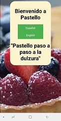
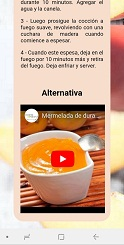

Manual de Usuario
Bienvenida: es la página principal en donde escogerás con cual idioma te gustaría seguir la página

Después de escoger el idioma (por ejemplo “Español”) entraras al menú principal del sitio que contiene 4 propuestas…

La primera de ellas es “Mermeladas” que contiene una lista de 9 recetas caseras para hacer, podrás escoger la de tu preferencia.

DISEÑO
Cada una de las recetas cuenta con “Ingredientes y Procedimiento”

Ademas al finalizar la receta cuenta con un video alternativo para ver, si es que el usuario no comprendio la receta que se encuentra anteriormente

Si el usuario desea volver al menú al ver otras opciones solo es necesario que de clic en el botón superior de lado izquierdo “Menú”
Una vez que ya has accedido al sitio ¿Cómo puedes cambiar el idioma
En la opción superior del menú se encuentra la opción “Cambio de idioma” da clic y te dará la opción de pasar al segundo idioma (“Ingles”).